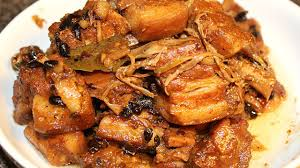

Humba Recipe

The ultimate Humba
The delicious Humba, Pinoy sarap.
Everyone's favorite!
Ingredients:
- 1 kilo Pork Belly
- 3 spoon of Oil
- 5 cup Water
- 350 ml Catsup
- 1 spoon Vinegar
- 1 sachet Banana Heart Dried
- 2 spoonful Brown Sugar
- 1 Red Onion
- 4 cloves Garlic
- 1 teaspoon Black Pepper
- 1 teaspoonfli Salt to Taste
- Ajinomoto to Taste
Steps:
- Saute Pork with Oil until Golden Brown
- Saute for 10 minutes the Pork with Oil, Garlic, Red Onion, Black Pepper, and Vinegar. Add Salt.
- Add hot Water 5 cups and Banana Heart, boiled it for 35 minutes(stir occassionally).
- Add Catsup, Brown Sugar and Ajinomoto, boiled for another 15 minutes(stir occassionally).
- Finish! Taste your Pride Humba.
return to main